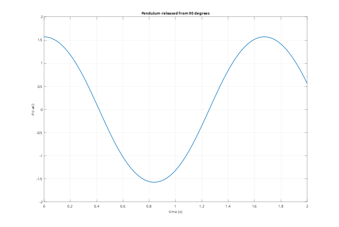
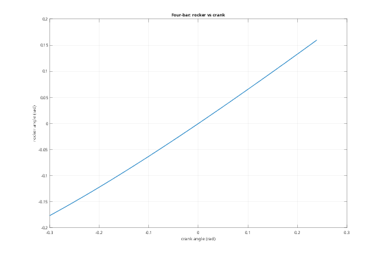

Contents
- Tutorial 5 - Couplings, joints and transmissions
- 1. An elastic door on two hinges
- 2. Revolute joints
- 3. Loading a joint
- 4. Locking a joint
- 5. Joint types and mechanism modes
- 6. Large motions: a pendulum released from 90 degrees
- 7. Closed loops: a four-bar linkage
- 8. Transmissions: belts and gears
- 9. Rules
Tutorial 5 - Couplings, joints and transmissions
Joints connect reference points with chosen directions left free, such as hinges, sliders and ball joints. A reference point is a rigid body, or a patch of an elastic body made rigid by a coupling. This tutorial covers:
- couplings (RBE2) on elastic bodies
- joint types, axes and springs; locking and loading joints
- joint positions (Position), large motions and closed loops
- transmissions: belts and gears
addpath(fileparts(fileparts(mfilename('fullpath')))); out = fullfile(tempdir, 'fmbdTutorials'); if ~isfolder(out), mkdir(out); end alu = fmbd.material(70e9, 0.33, 2700); g = 9.81;
1. An elastic door on two hinges
A 400 x 20 x 600 mm aluminium door, hinged along its x = 0 edge. The two hinge knuckles are 60 mm patches of the edge face, made rigid by couplings: s.couple(body, sel) returns the name of a new reference point at the centroid of the selected nodes (or at Point).
fmbd.boxSTL(fullfile(out, 'door.stl'), [0 0 0], [400 20 600]); door = fmbd.Body.elastic(fullfile(out, 'door.stl'), alu, Size = 20, Scale = 1e-3, Modes = 6, Name = 'door'); s = fmbd.System(); s.add(door); edge = @(X) X(:,1) < 1e-6; s.couple('door', @(X) edge(X) & X(:,3) < 0.06, Name = 'hingeLow'); s.couple('door', @(X) edge(X) & X(:,3) > 0.54, Name = 'hingeHigh');
2. Revolute joints
s.joint(A, B, type, ...) connects B to A ('ground' is allowed for A). The joint is placed at Point (default: B's reference point) and turns about, or slides along, Axis (the local z of the joint frame). The free directions are joint coordinates; Stiffness puts a spring on them, here a torsion spring (N m/rad) in the lower hinge, relaxed at zero.
k = 20; s.joint('ground', 'hingeLow', 'revolute', Axis = [0 0 1], Stiffness = k, Name = 'j1'); s.joint('ground', 'hingeHigh', 'revolute', Axis = [0 0 1], Name = 'j2'); [f, V] = s.modes([], 4); % The first mode is the door swinging against the spring. Check it against % a rigid door: f = sqrt(k/I)/(2 pi), with I the inertia about the hinge. m = 2700*0.4*0.02*0.6; I = m*(0.4^2 + 0.02^2)/12 + m*0.2^2; fprintf('swing mode: %.4f Hz, rigid door %.4f Hz\n', f(1), sqrt(k/I)/(2*pi)); disp(table((1:4)', f, 'VariableNames', {'mode', 'f_Hz'})); figure('Color', 'w'); for i = 1:2 subplot(1, 2, i); s.plotMode([], V(:,i), Amplitude = 0.1); title(sprintf('Mode %d: %.2f Hz', i, f(i))); view(30, 20); end
swing mode: 0.8557 Hz, rigid door 0.8558 Hz
mode f_Hz
____ _______
1 0.85565
2 133.57
3 322.55
4 393.68

3. Loading a joint
Joint coordinates can be inputs (forces or torques) and outputs. Under a constant 1 N m torque on the lower hinge the door turns to tau/k (plus a little twist of the elastic door): equilibrium finds the static state.
s.input('tau', 'j1'); s.output('a1', 'j1'); s.output('a2', 'j2'); x = s.equilibrium(Input = 1); [~, y] = s.simulate([0 1e-4], Initial = x, Step = 1e-4); fprintf('hinge angles under 1 N m: %.4f and %.4f rad (tau/k = %.4f)\n', y.a1(1), y.a2(1), 1/k);
hinge angles under 1 N m: 0.0500 and 0.0500 rad (tau/k = 0.0500)
4. Locking a joint
fix(joint) holds the joint coordinates at their Position (default 0). With the lower hinge locked, the door can only twist, so the swing mode disappears.
s.fix('j1'); fprintf('lower hinge locked: f1 = %.2f Hz\n', s.modes([], 1));
lower hinge locked: f1 = 39.34 Hz
5. Joint types and mechanism modes
Types, with their free directions in the joint frame: fixed (none), revolute (rz), prismatic (uz), cylindrical (uz rz), spherical (rx ry rz), planar (ux uy rz), free (all six: a bushing when combined with Stiffness). Any mask is possible with Free = [ux uy uz rx ry rz] (logical). Free directions without stiffness are mechanisms: 0 Hz modes.
mc = 7850*0.1*0.1*0.05; cart = fmbd.Body.pointMass(mc, [0 0 0], 1e-4*eye(3), Name = 'cart'); s = fmbd.System(); s.add(cart); s.joint('ground', 'cart', 'prismatic', Axis = [1 0 0], Stiffness = 1e5); fprintf('prismatic + spring: f = %.3f Hz (sqrt(k/m): %.3f Hz)\n', s.modes(), sqrt(1e5/mc)/(2*pi)); s = fmbd.System(); s.add(fmbd.Body.pointMass(mc, [0 0 0.1], 1e-4*eye(3), Name = 'cart')); s.joint('ground', 'cart', 'spherical', Point = [0 0 0]); fprintf('spherical joint: frequencies %s Hz (three mechanism modes)\n', mat2str(s.modes()', 3));
prismatic + spring: f = 25.404 Hz (sqrt(k/m): 25.404 Hz) spherical joint: frequencies [0 0 0] Hz (three mechanism modes)
6. Large motions: a pendulum released from 90 degrees
Joint coordinates are measured from the configuration in which the bodies are defined; Position sets the initial value. A pendulum released from a large angle swings with a longer period than the small-angle 2 pi sqrt(L/g): the nonlinear simulation reproduces the exact elliptic-integral period.
L = 0.5; th0 = pi/2; s = fmbd.System(Gravity = [0 0 -g]); s.add(fmbd.Body.pointMass(1, [0 0 -L], zeros(3), Name = 'bob')); % hanging down s.joint('ground', 'bob', 'revolute', Point = [0 0 0], Axis = [0 1 0], Position = th0, Name = 'pivot'); s.output('th', 'pivot'); [t, y] = s.simulate([0 2], Step = 5e-4, Rho = 1); zc = find(diff(sign(y.th)) ~= 0); % zero crossings: two per period tz = t(zc) - y.th(zc).*(t(zc+1) - t(zc))./(y.th(zc+1) - y.th(zc)); % interpolated Tsim = 2*mean(diff(tz)); Texact = 4*sqrt(L/g)*ellipke(sin(th0/2)^2); fprintf('period: %.5f s simulated, %.5f s exact (small angle %.5f s)\n', Tsim, Texact, 2*pi*sqrt(L/g)); figure('Color', 'w'); plot(t, y.th, 'LineWidth', 1.5); grid on xlabel('time (s)'); ylabel('\theta (rad)'); title('Pendulum released from 90 degrees');
period: 1.67432 s simulated, 1.67432 s exact (small angle 1.41850 s)

7. Closed loops: a four-bar linkage
Joints may close kinematic loops; the constraints are exact for any motion. Position on the crank sets the initial configuration of the whole loop. The planar loop is overconstrained in 3D (redundant out-of-plane rows), which is detected automatically. A constant torque turns the crank through a large angle.
P = {[0 0 0], [0.05 0.1 0], [0.3 0.15 0], [0.25 0 0]}; % O2, A, B, O4
mk = [0.2 0.5 0.3]; Jz = [1e-4 4e-4 2e-4];
s = fmbd.System();
for i = 1:3
s.add(fmbd.Body.pointMass(mk(i), (P{i} + P{i+1})/2, Jz(i)*eye(3), Name = sprintf('link%d', i)));
end
s.joint('ground', 'link1', 'revolute', Point = P{1}, Position = -0.3, Name = 'crank');
s.joint('link1', 'link2', 'revolute', Point = P{2});
s.joint('link2', 'link3', 'revolute', Point = P{3});
s.joint('ground', 'link3', 'revolute', Point = P{4}, Name = 'rocker'); % closes the loop
s.input('tau', 'crank'); s.output('crank', 'crank'); s.output('rocker', 'rocker');
[t, y] = s.simulate([0 0.6], Step = 1e-3, Input = @(t, y) 0.02);
figure('Color', 'w'); plot(y.crank, y.rocker, 'LineWidth', 1.5); grid on
xlabel('crank angle (rad)'); ylabel('rocker angle (rad)'); title('Four-bar: rocker vs crank');

8. Transmissions: belts and gears
s.transmission relates coordinates of different joints (or absolute coordinates of reference points) through the stretch delta = sum c_i s_i: a spring with Stiffness (and Damping), or exact without. Here a motor rotor drives an arm through a belt with ratio N = 3 (the motor turns 3x): delta = theta_motor/N - theta_arm. The belt mode is the two inertias oscillating against each other.
Jm = 2e-4; Ja = 0.05; N = 3; kBelt = 2e4; belt = @(stiffness) beltDrive(Jm, Ja, N, stiffness); s = belt(kBelt); f = s.modes(); fprintf('belt mode: %.2f Hz, two-inertia formula %.2f Hz\n', f(2), sqrt(kBelt*(1/Ja + 1/(N^2*Jm)))/(2*pi)); % Without Stiffness the belt is rigid (an ideal gear): the arm inertia is % reflected to the motor as Ja/N^2. A constant motor torque accelerates % the motor at tau/(Jm + Ja/N^2). s = belt([]); s.input('tau', 'motor'); s.output('qm', 'motor'); [t, y] = s.simulate([0 0.1], Input = @(t, y) 1e-3); fprintf('rigid gear: motor acceleration %.3f rad/s^2, tau/(Jm + Ja/N^2) = %.3f\n', ... 2*y.qm(end)/t(end)^2, 1e-3/(Jm + Ja/N^2)); % Transmissions can also act on the absolute rotation of a body % (Dirs = {1, 6}: rz of a rigid body), e.g. a base-mounted motor driving a % second link through a belt, independently of the first link's angle.
9. Rules
- Joint coordinates, springs and transmissions are zero/relaxed in the configuration in which the bodies are defined. Position (and Velocity) set the initial state; the rest of the system follows from the joints.
- Elastic transmissions start unstretched unless all their coordinates have a Position.
- Transmissions couple coordinates only; shaft loads from belt tension are not modelled.
function s = beltDrive(Jm, Ja, N, k) % Motor rotor and arm on revolute joints, coupled by a belt (rigid if k = []). s = fmbd.System(); s.add(fmbd.Body.pointMass(0.1, [0.1 0 0], Jm*eye(3), Name = 'rotor')); s.add(fmbd.Body.pointMass(1e-9, [0 0 0], Ja*eye(3), Name = 'arm')); s.joint('ground', 'rotor', 'revolute', Point = [0.1 0 0], Name = 'motor'); s.joint('ground', 'arm', 'revolute', Point = [0 0 0], Name = 'axis'); s.transmission({'motor', 'axis'}, [1/N -1], Stiffness = k); end
belt mode: 539.98 Hz, two-inertia formula 539.98 Hz rigid gear: motor acceleration 0.174 rad/s^2, tau/(Jm + Ja/N^2) = 0.174